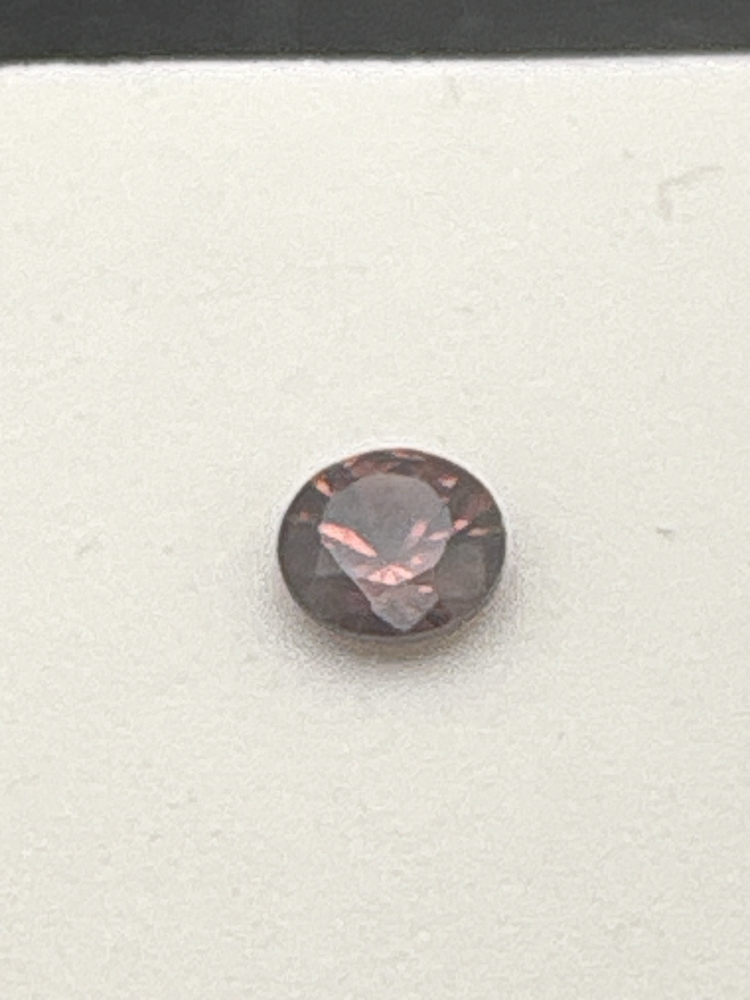

The Gem Drawer › No. 118

A third stone from the same reddish-brown zircon product line.
| Catalogue no. | #118 |
|---|---|
| As labeled | Zircon, labeled "Imperial Zircon" (same item code "ZYR501A" as gems #115 and #116; uncommon trade name, treat with mild caution) - see notes |
| Shape / cut | Round |
| Weight | 0.60 (minimum, per label) |
| Measurements | 5mm (minimum, per label) |
| Colour | Dark reddish-brown with coppery/rose flashes |
| Clarity / condition | Not recorded |
Interested in this stone, or in the collection as a whole? Terry VanWormer can answer questions about it.
Click here to inquireor email Terry directly at maxrebo34@gmail.com